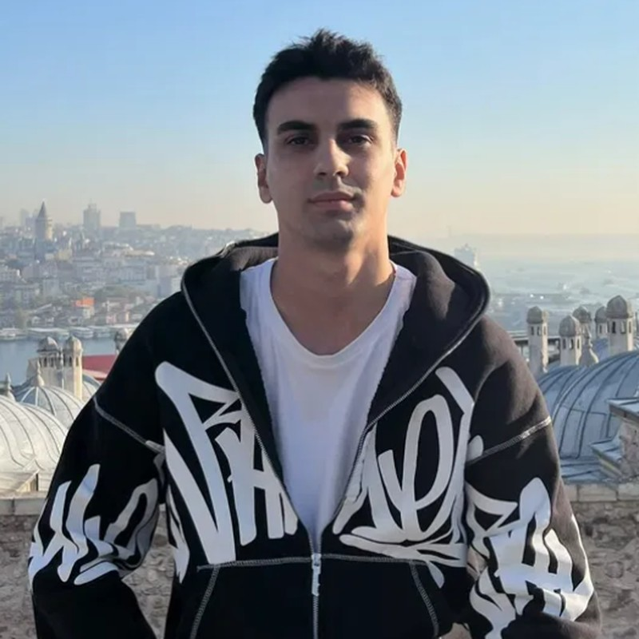
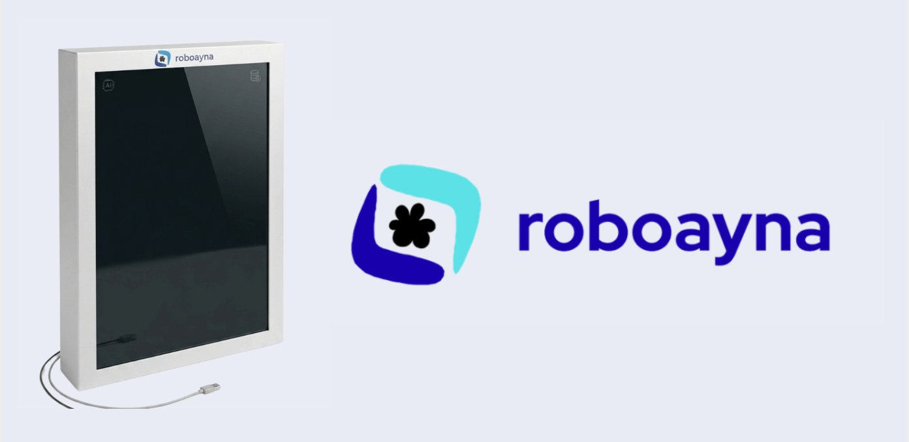

Staj ve proje fırsatlarına açığım
Muhammed Emin
Taştemir
> Robotik & Yapay Zeka · Gömülü Sistemler · Donanım_
Donanım ile yazılımın buluştuğu yerde çalışıyorum. STM32 mikrodenetleyiciler, Python ve Fusion 360 ile PCB tasarımı kullanarak fikirleri çalışan prototiplere dönüştürüyorum.

01
Hakkımda
Düzce Üniversitesi'nde Robotik ve Yapay Zeka eğitimi alıyorum; ilgimin merkezinde gömülü sistemler ve donanım geliştirme var.
STM32 mikrodenetleyiciler, Python ile yazılım geliştirme ve Fusion 360 üzerinde PCB tasarımı konularında uygulamalı deneyimim var. Gerçek zamanlı veri işleme, sensör-donanım entegrasyonu ve karmaşık sistemlerde hata ayıklama (debugging) süreçlerinde kendimi geliştiriyorum.
Hedefim; donanım ve yazılımı bir araya getiren yenilikçi çözümler üretmek ve Gömülü Sistemler, Elektronik Sistem Tasarımı ya da Yazılım alanlarında zorlu projelerde yer almak.
1Takım projesi:
AI destekli akıllı ayna
AI destekli akıllı ayna
3Sertifika &
katılım
katılım
10+Araç &
teknoloji
teknoloji
2027Beklenen
mezuniyet
mezuniyet
02
Yetenekler
Yazılım & Programlama
Tasarım & CAD
Yetkinlikler & Yöntemler
03
Projeler

ÖNE ÇIKAN · ŞUB–MAY 2025Robotik & Yapay Zeka · Takım: Robozen
RoboAyna — Yapay Zeka Destekli Akıllı Ayna
Telefona bakmadan bilgiye doğal yoldan ulaşmayı amaçlayan, sesli komutlarla çalışan akıllı ayna. Konuşma tanıma, yerel çalışan büyük dil modeli ve metinden sese teknolojilerini tek bir günlük asistan deneyiminde birleştiriyor.
- Sensör verilerini işleyen gömülü sistem mimarisi kurgulandı ve donanım prototipi geliştirildi.
- Fusion 360 ile devre şemaları / PCB tasarımları yapıldı.
- Lansman ve sunum için 3D render, logo ve tanıtım animasyonları hazırlandı.
Ses→STT→Niyet analizi→Gemma LLM→TTS→Ayna
Gömülü Sistemler · Konsept
geliştiriliyor
Odak ve Duruş Muhafızı / Focus Guard
Masa başı çalışırken duruşu ve odaklanmayı destekleyen, sensörleri ve zamanlayıcıyı birleştiren STM32 tabanlı gömülü sistem.
Sağlık Teknolojisi · Konsept
fikir aşaması
Acil Radar
En yakın acil servisleri bulmayı ve yoğunluk bilgisini anlaşılır şekilde sunmayı hedefleyen mobil uygulama.
$ ls github.com/EminTastemir
Tüm depolar ↗
04
Eğitim & Deneyim
Eyl 2025 — Haz 2027
Robotik ve Yapay Zeka Programı
Düzce Üniversitesi
- Gömülü sistemler, STM32 programlama, PCB tasarımı ve Python tabanlı yazılım geliştirme odaklı eğitim.
- Robotik sistemlerde gerçek zamanlı veri işleme ve sensör-donanım entegrasyonu üzerine uygulamalı çalışmalar.
Tem 2025 — Eyl 2025
Depo Operasyon Görevlisi
Nirvana Bilişim (Getir)
- Depo içi ürün yerleşimi ve düzen optimizasyonu.
- Stok yönetimi ve envanter takibi süreçlerinin kontrolü.
- Sipariş hazırlama ve lojistik operasyon süreçleri.
05
Birlikte bir şey inşa edelim.
Staj, proje iş birliği ya da sadece gömülü sistemler ve robotik üzerine sohbet için bana yazabilirsin.
muhammedemintastemir@gmail.com